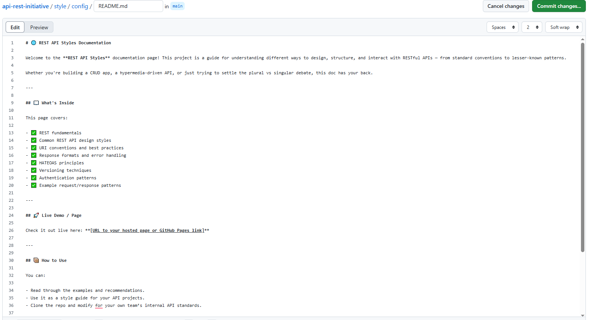
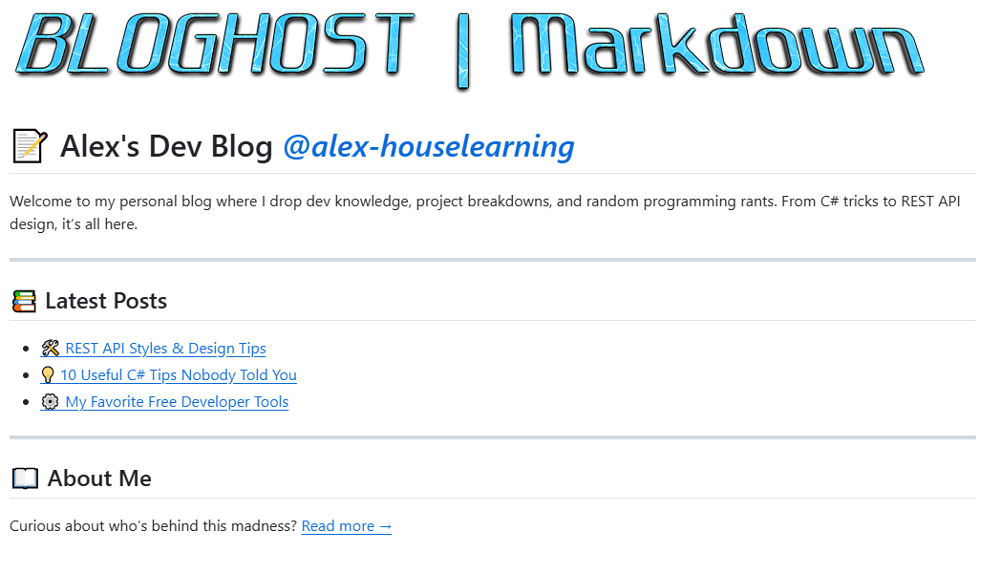

📄 Markdown Projects Showcase
Check out these awesome Markdown-powered projects for writing, documentation, note-taking, and more!



🔥 Top 5 Markdown GitHub Repos
- Showdown — A powerful Markdown-to-HTML converter for JavaScript projects.
- markdown-it — Fast and flexible Markdown parser with plugins and extensions.
- mkdocs — Project documentation with Markdown.
- Markdown Cheatsheet (SVGOMG) — Optimize SVGs and embed them in Markdown docs seamlessly.
- Jekyll — Transform plain text Markdown files into static websites and blogs.